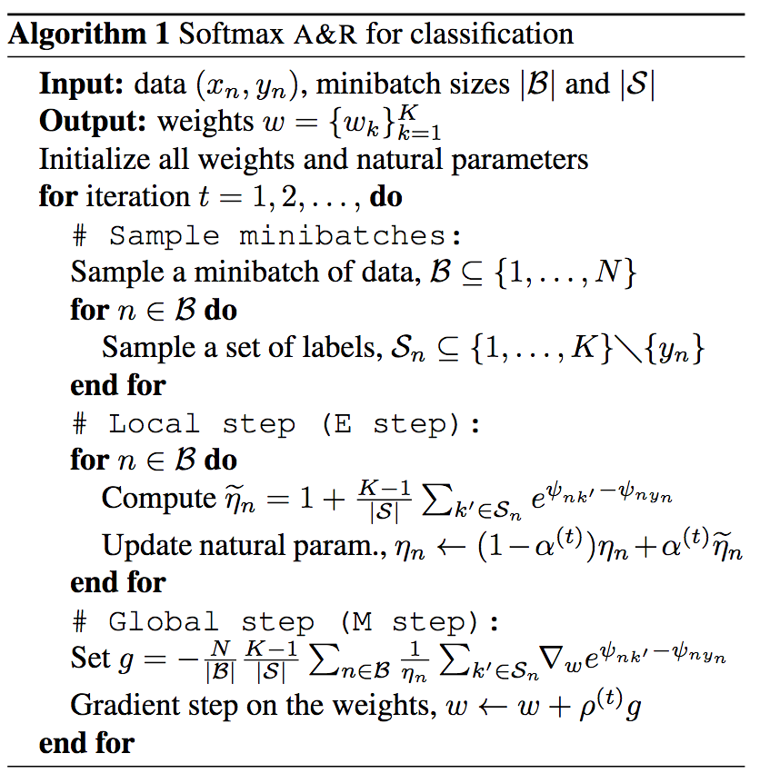
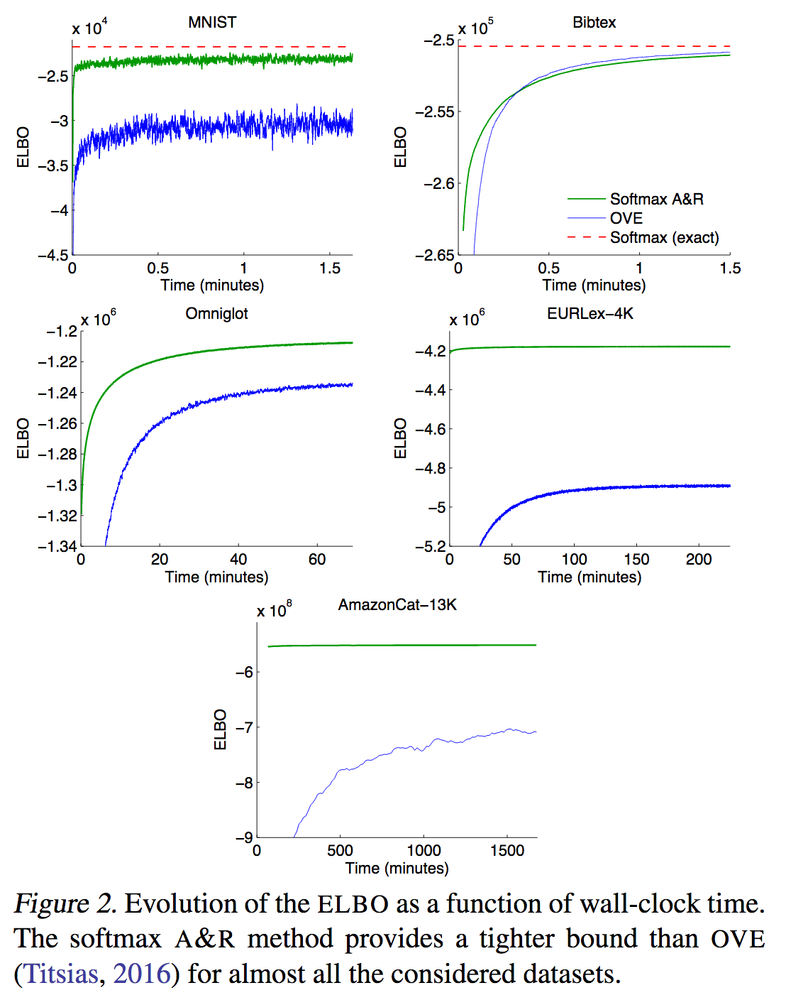
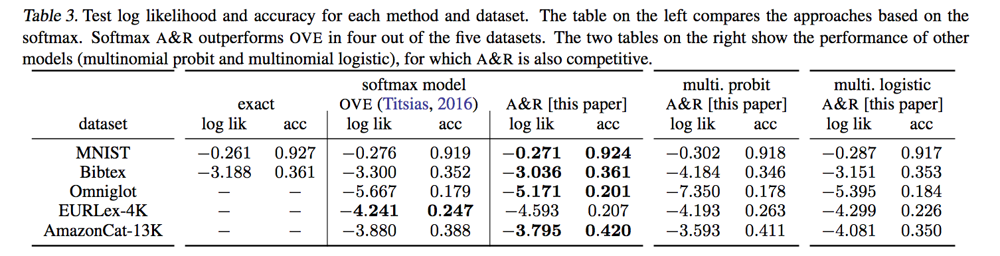

Augment and Reduce: Stochastic Inference for Large Categorical Distributions
Мотивация
Типичный способ работы с категориальными величинами заключается в использовании оператора softmax, принимающего K-мерный вектор логитов, и выдающий распределение на K-мерном вероятностном симплексе.
\[ \text{softmax}(x)_i = \frac{\exp(x_i)}{\sum_{k=1}^K \exp(x_k)} \]
Однако, если категорий много и K велико, постоянно перевычислять знаменатель становится вычислительно затратно. И даже если нас не интересуют не сами вероятности, а только их градиенты, то сложность их вычисления тоже \(O(K)\). Существует миллион статей, в которых предлагаются разные способы приближения, но почти все из них не очень обоснованные. В этой статье авторы решают эту задачу с помощью применения вариационного вывода, тем самым получая нижнюю оценку на максимизируемый логарифм правдоподобия.
Математика
Основная идея статьи заключается в том, чтобы вообразить себе категориальное распределение как маргинализацию некоторого совместного распределения (с некоторыми приятными свойствами, которые бы позволили нам пользоваться несмещёнными стох. оценками сумм) с латентной переменной \(\varepsilon\), а потом сделать вар. вывод на неё.
Такое совместное авторы получают с помощью т.н. аугментации, т.е. рассмотрения дискретных случайных величин как некоторого дискретизующего преобразования над непрерывными. В частности, если у нас есть случайная величина \(y \sim \text{Categorical}(\pi_1, \dots, \pi_K)\) с логитами \(\psi = (\log \pi_1, \dots, \log \pi_K)\), то
\[ y \stackrel{d}{=} \text{argmax}(\psi_k + \varepsilon_k), \quad\quad \varepsilon_k \sim \text{Gumbel}(0, 1) \]
Где аргмаксимум берётся по индексам k, а \(\varepsilon_k\) семплируются независимо и одинаково распределённо. Оказывается, что шум можно брать не только гумбелевский, натурально и другие распределения \(\varepsilon\) будут давать какое-то дискретное распределение на \(y\), просто Гумбелевский даст вероятностями \(y\) софтмакс над логитами \(\psi\), а другие распределения будут давать другие преобразования логитов (не всегда вычислимые аналитически).
Теперь можно представить \(p(y = k)\) в виде маргинализации, а именно
\[ \begin{align*} p(y = k) &= \mathbb{P}(\psi_k + \varepsilon_k > \psi_j + \varepsilon_j, \forall j \not= k) \\ &= \int_\mathbb{R} p(\varepsilon_k) \prod_{j\not=k} \mathbb{P}(\varepsilon_j < \psi_k - \psi_j + \varepsilon_k) d\varepsilon_k \\ &= \int_\mathbb{R} p(\varepsilon_k) \prod_{j\not=k} F(\psi_k - \psi_j + \varepsilon_k) d\varepsilon_k \end{align*} \]
Где \(p(\varepsilon)\) – функция плотности нашего шума \(\varepsilon\), а \(F\) – (кумулятивная) функция распределения (которая у какого-нибудь Гумбеля считается аналитически). Получается, что искомое нами совместное распределение есть
\[ p(y = k, \varepsilon_k) = p(\varepsilon_k) \prod_{j\not=k} F(\psi_k - \psi_j + \varepsilon_k) \]
У этой на первый взгляд непримичательной плотности есть одно интересное свойство: в её логарифме произведение превратится в сумму, которую мы можем несмещённо стохастически оценивать с помощью Монте Карло. В общем, давайте делать вар. вывод на \(\varepsilon_k\):
\[ \begin{align*} \log p(y = k) &\ge \mathbb{E}_{q(\varepsilon_k)} \left[\log p(y = k, \varepsilon) - \log q(\varepsilon)\right] \\ &= \mathbb{E}_{q(\varepsilon_k)} \left[\log p(\varepsilon_k) + \sum_{j\not=k} \log F(\psi_k - \psi_j + \varepsilon_k) - \log q(\varepsilon)\right] \end{align*} \]
Т.е. мы для каждого слагаемого вида \(\log p(y_n = k)\) в правдоподобии заводим \(q(\varepsilon_{nk})\) 1 и заменяем это слагаемое на нижнюю оценку. Однако, её наивное вычисление по-прежнему требует \(O(K)\) вычислений (из-за второго слагаемого) и ничем не помогает в нашем деле. Ну, исправляется это просто, мы просто заменим сумму на выборочную сумму с масштабированием:
\[ \mathbb{E}_{S} \left[\tfrac{K-1}{|S|} \sum_{i \in S} \log F(\psi_k - \psi_i + \varepsilon_k)\right] = \sum_{j\not=k} \log F(\psi_k - \psi_j + \varepsilon_k) \]
Где S – равномерно засемплированная выборка из \(\{1, \dots, K\} \backslash \{k\}\). Итого, заменяя второе слагаемое в нижней оценке на такую оценку, получаем выражение, сложность вычисления которой уже не \(O(K)\), а \(O(|S|)\). Ну а дальше можно делать обычный градиентный спуск, применив репараметризацию к \(q(\varepsilon_k)\).
Гумбелевский случай
Удивительным образом, в случае распределения Гумбеля мы можем найти оптимальное \(q^\star(\varepsilon_k)\) аналитически:
\[ q^\star(\varepsilon_k) = \text{Gumbel}(\varepsilon_k; \log \eta_k^\star, 1) \]
Где \(\eta_k^\star = 1 + \sum_{j\not=k} \exp(\psi_j - \psi_k)\), но лучше от этого не становится, т.к. сложность вычисления такого слагаемого опять же линейна. Поэтому мы будем учить приближение \(q(\varepsilon_k) = \text{Gumbel}(\varepsilon_k; \log \eta_k, 1)\) градиентной оптимизацией по \(\eta_k\). Наша нижняя оценка превращается в 2
\[ \mathcal{L} = 1 - \log \eta_k - \frac{1}{\eta_k} \left(1 + \sum_{j\not=k} \exp(\psi_j - \psi_k) \right) \]
К нашему огромному успеху \(q(\varepsilon_k)\) лежит в экспоненциальном классе распределений, а это позволяет нам использовать натуральный градиентный спуск из фреймворка стохастического вариационного вывода, что позволяет нам пользоваться стохастически оценками натурального параметра \(\eta_k\). Градиентное обновление тогда имеет вид
\[ \eta_k^{(t+1)} = (1 - \alpha_t) \eta_k^{(t)} + \alpha_t \tilde{\eta_k} \]
Где \(\tilde{\eta_k} = 1 + \tfrac{K-1}{|S|} \sum_{i \in S} \exp(\psi_i - \psi_k)\) – стохастическая оценка натурального параметра по выборке \(S\), а \(\alpha_t\) – размер шага градиентного спуска, удовлетворяющий условиям Роббинса-Монро.
Итого алгоритм получается такой: 
Эксперименты
Авторы в основном сравниваются с другим методом (за авторством Титсиаса, являющего соавтором и этой статьи) – “One-vs-Each Approximation to Softmax for Scalable Estimation of Probabilities”, чуть ли не единственным так же дающим нижнюю оценку. Авторы утверждают, что у их метода зазор между настоящим правдоподобием и нижней оценкой меньше, поэтому он предпочтительнее.

В экспериментах они бьют OvE:

К сожалению, ни в одной из двух статей ничего не говорится о том, какого ускорения можно ожидать в сравнении с полным софтмаксом.
Резюме
Довольно интересная статья, можно использовать в качестве примера в курсе по БММО. К минусам можно отнести необходимость хранить параметры распределения \(q(\varepsilon_k)\) для каждого из \(N\) наблюдений в обучающей выборке.
Думаю, здесь можно категориальное распределение считать частным случаем марковской сети.
Это не означает, что у нас \(NK\) распределений. На самом деле, нам для каждого \(y_n\) интересно только \(p(y_n=k)\), поэтому и \(\epsilon\) интересен только \(k\)-ый, так что их скорее \(O(N)\).↩
Примечательно, что эта оценка уже известна человечеству лет 10 как. Когда-то её выводили, пользуясь лог-вогнутостью.↩